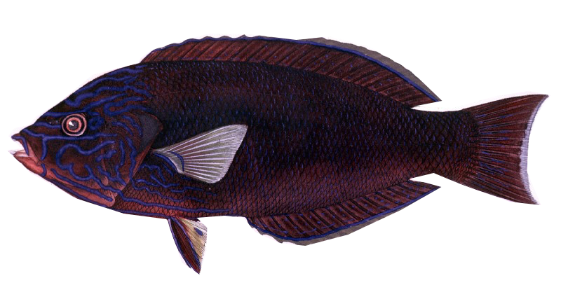

My current research interests lie at the intersections of evolutionary biology, cognitive psychology, computer science.
Why do reef fishes exhibit immense external phenotypic diversity?
What macroevolutionary processes explain phenotypically disparate groups across the tree of life? My research focuses on studying the macroevolutionary dynamics of reef-associated fishes and their color and pattern using phylogenetic comparative methods and developing novel approaches to study organismal color patterning.
I use machine learning algorithms and develop deep learning protocols to better understand complex underlying patterns embedded within evolutionary and ecological data sets, as well as to more efficiently collect big data in biology using high-throughput phenomics.
My current research goals are to develop a suite of methods that can be used to better understand the tempo and mode of color pattern evolution across the entire fish tree of life. I also seek to provide a framework for other researchers to perform big data analytics through the development of novel high-throughput phenoscaping approaches.
I hope that my contributions revolutionze the way we explore evolutionary patterns in large data sets to add to our current breadth of knowledge regarding the evolution of one of the largest, most diverse radiations of the tree of life.
Why do we remember, and why do we forget?
Aside from my primary graduate research, I have also been interested in studying patterns in human cognition, memory, and learning. Specifically, I am interested in further extending the body of literature related to the value-directed remembering paradigm and how underlying mechanisms may be evolutionarily rooted in adaptive behaviors.
Primary Advisor
Michael E. Alfaro, Ph.D. (Alfaro Lab UCLA Website)
Collaboratoring Researchers
Memory and Lifespan Cognition Lab, UCLA (Website)
Quental Lab, Universidade de São Paulo, Brasil (Website)
Foster Lab, UCLA (Website)